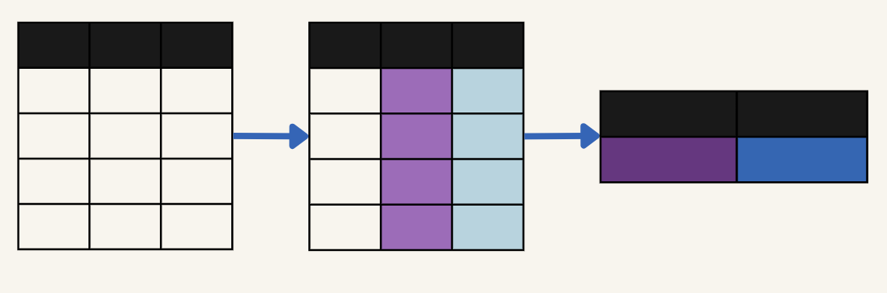
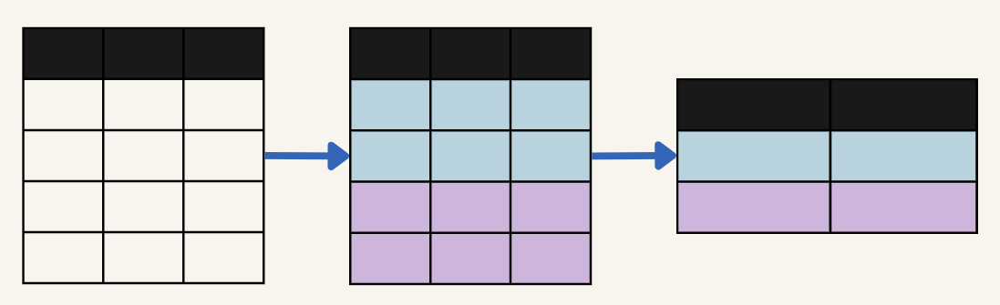

# Crea vectores para cada variable
edad = c(25, 30, 35, 40, 28)
genero = c("Femenino", "Masculino", "Femenino",
"Masculino", "Femenino")
medio_comunicacion = c("Internet", "Televisión", "Radio",
"Prensa Escrita", "Internet")
# Combina los vectores en un data.frame
encuesta = data.frame(Edad = edad,
Género = genero,
Medio_de_comunicación_preferido = medio_comunicacion)3 Integración
¿Cómo podemos usar R para analizar datos? En este capítulo, exploraremos los conceptos fundamentales que forman la base del análisis de datos en R, con un enfoque práctico en herramientas y procesos esenciales. Nuestro objetivo este capítulo será explicar la importancia del manejo de datos y cómo trabajar de manera eficiente con data.frames y tibbles.
A lo largo del capítulo, nos centraremos en varios aspectos clave que forman parte del flujo de trabajo en el análisis de datos utilizando herramientas del tidyverse:
La importación de datos: Aprenderemos a cargar datos desde diferentes fuentes, como archivos CSV o Excel, utilizando paquetes especializados.
La limpieza de datos, donde aprenderemos a manejar problemas comunes como nombres de columnas inconsistentes, valores perdidos y duplicados, y cómo corregir tipos de datos incorrectos.
Las funciones resumen, que nos permiten explorar rápidamente nuestros datos, identificar patrones y obtener información sobre su estructura y contenido.
La manipulación de datos con dplyr, donde descubriremos cómo filtrar, seleccionar, agrupar y transformar datos con funciones diseñadas para ser intuitivas y fáciles de combinar.
La creación de visualizaciones con ggplot2, donde aprenderemos a generar gráficos apropiados que no solo nos ayuden a explorar nuestros datos, sino que también comunican hallazgos de manera visual.
Este capítulo es extenso, ya que cubre una amplia gama de conceptos fundamentales que se usarán a lo largo del resto del libro. Sin embargo, cada sección está diseñada para ser progresiva, conectando cada paso con el siguiente. Te animo a avanzar paso a paso, ya que cada etapa es fundamental es clave para poder entender el resto del contenido teórico del libro.
3.1 Data.frames
Cuando recolectamos o hacemos uso de conjuntos de datos, estos suelen estar almacenados en estructuras tabulares, lo que facilita su comprensión y análisis. Una estructura tabular se refiere a una organización de los datos donde cada columna representa una variable (es decir, una característica o atributo que estamos observando), y cada fila corresponde a una observación (un registro individual de los datos, como un caso o instancia). En R, la forma más común de trabajar con este tipo de estructuras es a través de objetos denominados data.frames.

Recuerda que, en el capítulo anterior, cuando exploramos los tipos de objetos en R, vimos que, a diferencia de una matriz (que también tiene una forma tabular pero almacena datos de un solo tipo), un data.frame permite que cada columna contenga datos de diferentes tipos. Esto significa que podemos trabajar simultáneamente con variables numéricas, categóricas o lógicas dentro de una misma estructura.
Imaginemos que queremos crear un conjunto de datos con tres variables:
- Edad: numérica, que representa la edad de los encuestados.
- Género: categórica, con valores como “Masculino” y “Femenino”.
- Medio de comunicación preferido: categórica, con valores como “Televisión”, “Radio”, “Internet” y “Prensa Escrita”.
Podemos construir este data.frame en R utilizando vectores para cada variable y luego combinándolos:
El resultado es una tabla que muestra la edad, el género y medio de comunicación preferidos de los encuestados, estructurados en filas y columnas.
encuesta Edad Género Medio_de_comunicación_preferido
1 25 Femenino Internet
2 30 Masculino Televisión
3 35 Femenino Radio
4 40 Masculino Prensa Escrita
5 28 Femenino InternetAdemás, peudes seleccionar una columna de data.frame de forma individual utilizando el signo $
encuesta$Medio_de_comunicación_preferido[1] "Internet" "Televisión" "Radio" "Prensa Escrita"
[5] "Internet" Para observar el data.frame de manera visual, RStudio ofrece herramientas muy convenientes. Podemos localizar el nombre del data.frame en el panel “Entorno” (Environment) y hacer clic en el ícono de la tabla que aparece al lado. Esto abrirá una vista interactiva en forma de hoja de cálculo, donde podrás explorar las filas y columnas de tu conjunto de datos.

Otra forma, desde la consola, es usar la función View(). Por ejemplo, si tu data.frame se llama encuesta, simplemente escribe el siguiente código en la consola:
# View(encuesta)Aunque esta es una forma de generar un data.frame, es importante mencionar que, en la práctica, la mayoría de los conjuntos de datos no se crean desde cero. Normalmente, los datos provienen de otras fuentes, como archivos de texto, hojas de cálculo o bases de datos. Por ello, uno de los pasos más importantes al trabajar con datos es importarlos desde estas fuentes, lo cual veremos en más detalle más adelante.
3.2 El flujo de trabajo en el Tidyverse
Como vimos en el anterior capítulo, un paquete en R es una colección de funciones y datos que extienden las capacidades básicas del lenguaje. Los paquetes te permiten realizar tareas específicas de manera más eficiente. Al instalar y cargar un paquete, se accede a un conjunto de herramientas especializadas que simplifican tu trabajo.
Debido a que existe una multitud enorme de paquetes, sugiero les eches un vistazo siempre que puedas. Debido al propósito de este libro, nos centraremos especialmente en uno de estos que, a nivel personal, es muy intuitivo y poderoso: El Tidyverse. (Wickham et al. 2019)
El tidyverse es un sistema coherente de paquetes para la manipulación, exploración y visualización de datos que comparten una lógica de diseño común. Estos paquetes son fundamentales en el flujo de trabajo de un analista de datos y, en mi opinión personal, son algunos de los más comprensibles e intuitivos que existen en el mundo de la programación.
Algunas características del tidyverse:
Todos los paquetes del tidyverse siguen principios de diseño similares y se entienden entre sí.
La sintaxis y las funciones están diseñadas para ser fáciles de entender y usar.
La imagen ilustra el flujo de trabajo típico al analizar datos usando los paquetes del tidyverse. Recuerda que debemos seguir un orden, pues esto asegura que podamos manejar nuestros datos de manera coherente, reproducible y eficiente.
El flujo de trabajo incluye las siguientes etapas principales:
3.3 Importación y resumen
El primer paso en el flujo de trabajo es importar los datos desde fuentes externas al entorno de R. En las ciencias sociales, los investigadores suelen trabajar con bases de datos provenientes de encuestas, experimentos o datos recolectados en plataformas como hojas de cálculo de Excel, herramientas de encuestas en línea o programas de análisis estadístico como SPSS o Stata. Aunque R incluye funciones base (viene por defecto y no necesitan cargar algún paquete) para la importación de datos, como read.csv(), en este capítulo nos enfocaremos en los paquetes especializados como readr, readxl y haven, que son más actuales y generan tibbles, una versión mejorada de los data.frames.
Un ejemplo interesante es el caso de la Encuesta Nacional de Hogares (Enaho), cuyos datos son publicados por las instituciones encargadas en diferentes formatos: CSV, Stata (.dta) y SPSS (.sav). Esto demuestra cómo una misma base de datos puede estar disponible en múltiples formatos para adaptarse a las herramientas utilizadas por distintos analistas. Por ejemplo, un investigador que utiliza Excel podría optar por trabajar con el formato CSV, mientras que alguien que trabaja con Stata o SPSS puede preferir los archivos nativos de esos programas.
3.3.1 Importación
Los archivos que utilizaremos a lo largo de este libro están disponibles en la carpeta de archivos del libro, la cual se recomienda descargar y guardar en una carpeta de trabajo en tu computadora. Para seguir los ejemplos en este capítulo, asegúrate de tener los archivos en tu carpeta de trabajo y configurar tu directorio de trabajo en RStudio.
El formato CSV (Comma-Separated Values) es uno de los más utilizados debido a su simplicidad y compatibilidad. Cada fila en un archivo CSV representa una observación, y los valores dentro de cada fila están separados por comas.
Un ejemplo de cómo podría lucir un archivo CSV:
ID,Edad,Género,Ingreso
1,25,Femenino,1500
2,30,Masculino,2000
3,45,Femenino,2500El paquete readr es parte del tidyverse y está diseñado para leer archivos CSV.
# Cargamos el paquete readr
library(readr)Al importar un conjunto de datos debemos nombrarlo.
# Importamos el archivo CSV y lo asignamos a un objeto
encuesta_csv = read_csv("encuesta.csv")
# Mostramos
encuesta_csv# A tibble: 8 × 3
genero medio_comunicación edad
<chr> <chr> <dbl>
1 Masculino Televisión 34
2 Femenino Redes sociales 25
3 Femenino Redes sociales 55
4 Otro Radio 63
5 Femenino Televisión 47
6 Masculino Redes sociales 19
7 Masculino Redes sociales 29
8 Masculino Periódico 75Los archivos de Excel son comunes en las ciencias sociales debido a su facilidad de uso y capacidad para almacenar datos tabulares en varias hojas. El paquete readxl (Wickham y Bryan 2023) permite importar estos archivos, ya sea en formato .xls o .xlsx, sin necesidad de tener Excel instalado.
# Cargamos el paquete readxl
library(readxl)# Importamos los datos desde un archivo Excel
encuesta_excel = read_excel("encuesta.xlsx")
# Mostramos
encuesta_excel# A tibble: 10 × 3
genero medio_comunicación edad
<chr> <chr> <dbl>
1 Masculino Televisión 34
2 Femenino Redes sociales NA
3 Femenino Redes sociales 55
4 Otro Radio 63
5 Femenino Televisión NA
6 Masculino Redes sociales 19
7 Masculino <NA> 29
8 Masculino Periódico 75
9 Femenino Redes sociales 55
10 Masculino Televisión 34Si el archivo contiene múltiples hojas, podemos especificar cuál importar utilizando el argumento sheet:
# Importamos una hoja específica del archivo Excel
# encuesta_excel_hoja = read_excel("encuesta.xlsx",
# sheet = "Resultados")En ciencias sociales es común trabajar con datos provenientes de software estadístico como Stata o SPSS. Estos formatos incluyen información adicional, como etiquetas de variables, que son importantes para interpretar los datos correctamente. Para trabajar con estos archivos en R, utilizamos el paquete haven (Wickham, Miller, y Smith 2023).
# Cargamos el paquete haven
library(haven)Importamos un archivo Stata y lo asignamos a un objeto
encuesta_stata = read_dta("encuesta.dta")
# Mostramos
encuesta_stata# A tibble: 5 × 3
Edad Género Medio_de_comunicación_preferido
<dbl> <chr> <chr>
1 25 Femenino Internet
2 30 Masculino Televisión
3 35 Femenino Radio
4 40 Masculino Prensa Escrita
5 28 Femenino Internet O un archivo SPSS
encuesta_spss = read_sav("encuesta.sav")
# Mostramos
encuesta_spss# A tibble: 8 × 3
genero medio_comunicación edad
<chr> <chr> <dbl>
1 Masculino Televisión 34
2 Femenino Redes sociales 25
3 Femenino Redes sociales 55
4 Otro Radio 63
5 Femenino Televisión 47
6 Masculino Redes sociales 19
7 Masculino Redes sociales 29
8 Masculino Periódico 753.3.2 Funciones resumen
Una vez que hemos importado los datos a R, es fundamental conocer su estructura y contenido antes de proceder con el análisis. Para ello, podemos utilizar una variedad de funciones resumen que nos permiten explorar el tibble y obtener información importante sobre las variables y los datos contenidos allí.
str() es una función base que describe la estructura del objeto, incluyendo el número de observaciones, las variables y sus tipos. Es muy parecida a glimpse() con la diferencia que es una función base y por lo tanto no depende del ecosistema tidyverse.
# Información estructural básica del tibble
str(encuesta_csv)spc_tbl_ [8 × 3] (S3: spec_tbl_df/tbl_df/tbl/data.frame)
$ genero : chr [1:8] "Masculino" "Femenino" "Femenino" "Otro" ...
$ medio_comunicación: chr [1:8] "Televisión" "Redes sociales" "Redes sociales" "Radio" ...
$ edad : num [1:8] 34 25 55 63 47 19 29 75
- attr(*, "spec")=
.. cols(
.. genero = col_character(),
.. medio_comunicación = col_character(),
.. edad = col_double()
.. )
- attr(*, "problems")=<externalptr> glimpse() es una función del tidyverse que proporciona una vista compacta del tibble, mostrando los nombres de las variables, sus tipos de datos y una muestra de valores.
# Cargamos el paquete tibble
library(tibble)
# Exploramos la estructura general del tibble
glimpse(encuesta_csv)Rows: 8
Columns: 3
$ genero <chr> "Masculino", "Femenino", "Femenino", "Otro", "Femen…
$ medio_comunicación <chr> "Televisión", "Redes sociales", "Redes sociales", "…
$ edad <dbl> 34, 25, 55, 63, 47, 19, 29, 75summary() proporciona estadísticas descriptivas básicas para cada columna, como mínimos, máximos, medias, medianas y conteos de valores para variables categóricas. De especial utilidad para el próximo capítulo.
# Resumen estadístico de las variables
summary(encuesta_csv) genero medio_comunicación edad
Length:8 Length:8 Min. :19.00
Class :character Class :character 1st Qu.:28.00
Mode :character Mode :character Median :40.50
Mean :43.38
3rd Qu.:57.00
Max. :75.00 head() muestra las primeras filas del tibble, permitiendo observar una muestra inicial de los datos. Puedes indicar cuanto valores deseas que devuelva especificando el segundo argumento, por defecto son seis.
# Visualizamos las primeras seis filas
head(encuesta_csv)# A tibble: 6 × 3
genero medio_comunicación edad
<chr> <chr> <dbl>
1 Masculino Televisión 34
2 Femenino Redes sociales 25
3 Femenino Redes sociales 55
4 Otro Radio 63
5 Femenino Televisión 47
6 Masculino Redes sociales 19# Visualizamos las primeras dos filas
head(encuesta_csv, 2)# A tibble: 2 × 3
genero medio_comunicación edad
<chr> <chr> <dbl>
1 Masculino Televisión 34
2 Femenino Redes sociales 25tail() es similar a head(), pero muestra las últimas filas del tibble.
# Visualizamos las últimas seis filas
tail(encuesta_csv)# A tibble: 6 × 3
genero medio_comunicación edad
<chr> <chr> <dbl>
1 Femenino Redes sociales 55
2 Otro Radio 63
3 Femenino Televisión 47
4 Masculino Redes sociales 19
5 Masculino Redes sociales 29
6 Masculino Periódico 75# Visualizamos las últimas dos filas
tail(encuesta_csv, 2)# A tibble: 2 × 3
genero medio_comunicación edad
<chr> <chr> <dbl>
1 Masculino Redes sociales 29
2 Masculino Periódico 75dim() devuelve las dimensiones del tibble, es decir, el número total de filas y columnas.
# Verificamos las dimensiones del tibble
dim(encuesta_csv)[1] 8 3colnames() muestra los nombres de las columnas (variables) del tibble
# Consultamos los nombres de las columnas
colnames(encuesta_csv)[1] "genero" "medio_comunicación" "edad" Perfecto, ya tenemos el primer paso cubierto. Manos a la obra.
3.4 Limpieza
Una vez que hemos importado los datos, el siguiente paso es limpiarlos. Este proceso consiste en identificar y corregir problemas comunes como valores faltantes, nombres de columnas inconsistentes, duplicados y tipos de datos incorrectos. La limpieza asegura que los datos estén en un estado coherente y listo para ser transformado o analizado.
Manejo de valores faltantes
El manejo de valores faltantes es uno de los aspectos más complejos en la limpieza de datos, y un tema importante a considerar al trabajar con conjuntos de datos. Un valor perdido o NA en R no es lo mismo que un 0 o un espacio vacío. Un valor perdido (o NA, que significa “Not Available”) es una celda que no contiene información en absoluto, lo que puede ocurrir por diversas razones, como un error en la recolección de los datos, una respuesta no proporcionada en una encuesta o una omisión involuntaria al momento de ingresar los datos. Por ejemplo:
encuesta_excel# A tibble: 10 × 3
genero medio_comunicación edad
<chr> <chr> <dbl>
1 Masculino Televisión 34
2 Femenino Redes sociales NA
3 Femenino Redes sociales 55
4 Otro Radio 63
5 Femenino Televisión NA
6 Masculino Redes sociales 19
7 Masculino <NA> 29
8 Masculino Periódico 75
9 Femenino Redes sociales 55
10 Masculino Televisión 34En R, puedes detectar estos valores con funciones como is.na(), que devuelve un valor lógico (TRUE o FALSE) indicando si un valor es NA. Seleccionamos la columna.
is.na(encuesta_excel$edad) [1] FALSE TRUE FALSE FALSE TRUE FALSE FALSE FALSE FALSE FALSERecuerda que puedes sumar un vector lógico para contar los TRUE. En este caso los valores perdidos.
# Cantidad de valores perdidos
sum(is.na(encuesta_excel$edad)) [1] 2Una de las formas más simples de manejar valores faltantes es eliminarlos por completo. Esto puede hacerse utilizando la función drop_na() del paquete tidyr (Wickham, Vaughan, y Girlich 2024), que elimina las filas que contienen al menos un valor NA en cualquier columna. Esta es una solución rápida, pero es importante ser cauteloso, ya que puede resultar en la pérdida de información valiosa si hay muchos datos faltantes.
# Cargamos tidyr
library(tidyr)# Eliminamos filas con valores faltantes
drop_na(encuesta_excel)# A tibble: 7 × 3
genero medio_comunicación edad
<chr> <chr> <dbl>
1 Masculino Televisión 34
2 Femenino Redes sociales 55
3 Otro Radio 63
4 Masculino Redes sociales 19
5 Masculino Periódico 75
6 Femenino Redes sociales 55
7 Masculino Televisión 34Comparemos
# Podemos nombrarlo
encuesta_sin_na = drop_na(encuesta_excel)
# Presta atención a las dimensiones del tibble original y del tibble sin NA
dim(encuesta_excel)[1] 10 3dim(encuesta_sin_na)[1] 7 3Si queremos ser más específicos y eliminar valores faltantes solo en una columna particular, podemos usar:
# Eliminamos filas donde la columna 'edad' tiene NA
encuesta_sin_na = drop_na(encuesta_excel, edad)
encuesta_sin_na# A tibble: 8 × 3
genero medio_comunicación edad
<chr> <chr> <dbl>
1 Masculino Televisión 34
2 Femenino Redes sociales 55
3 Otro Radio 63
4 Masculino Redes sociales 19
5 Masculino <NA> 29
6 Masculino Periódico 75
7 Femenino Redes sociales 55
8 Masculino Televisión 34Aunque eliminar valores faltantes puede ser un enfoque válido en algunos casos, no siempre es ideal. Si eliminamos demasiadas filas, podemos perder una cantidad significativa de información, lo que podría alterar los resultados de nuestro análisis. Por eso, en lugar de eliminar, muchas veces es preferible imputar los valores faltantes, es decir, reemplazarlos con un valor estimado. Por ejemplo, algunas estrategias comunes para imputar valores incluyen reemplazar por el promedio en el caso de variables numéricas o reemplazar por la moda en variables categóricas donde los valores faltantes pueden ser reemplazados por el valor más frecuente (la moda).
Para las siguentes técnicas de limpieza utilizaremos el conjunto de datos encuesta_problematica. Te animo a que puedas identificar que posible problemas tiene antes de seguir adelante.
datos_problema = read.csv('encuesta_problematica.csv')
datos_problema ID Nombre.PARTICIPANTE EDAD..años. Ingreso.Mensual género
1 1 Luis Bartra 23 1500.0 F
2 2 Carlos Gómez 27 2000.0 M
3 3 Cristina Pérez 23 1500.0 F
4 4 María López 45 2500.0 F
5 5 Javier Muller 35 3800.0 M
6 6 Liz García 29 1800.5 MSi te diste cuenta, utilizamos read.csv en lugar de read_csv del paquete readr, ya que read_csv detecta automáticamente el tipo de dato de cada columna, incluso si hay errores en los valores. Para el propósito de este ejemplo, donde queremos ilustrar y solucionar errores comunes en los datos, no lo utilizaremos. ¡Pero ahí tienes otra gran razón para preferir read_csv en tu flujo de trabajo diario!
Estandarización de nombres de columnas
Los nombres de las columnas en los conjuntos de datos pueden ser inconsistentes, incluir caracteres especiales o espacios que dificulten el manejo en R.
Primero, identificamos los nombres originales del conjunto de datos utilizando la función base names():
colnames(datos_problema)[1] "ID" "Nombre.PARTICIPANTE" "EDAD..años."
[4] "Ingreso.Mensual" "género" Para resolver esto, utilizamos la función clean_names() del paquete janitor. Esta función transforma automáticamente los nombres de las columnas en un formato limpio y consistente:
# Cargar el paquete janitor
library(janitor)
# Estandarizar los nombres de las columnas
datos_problema = clean_names(datos_problema)Mostramos
colnames(datos_problema)[1] "id" "nombre_participante" "edad_anos"
[4] "ingreso_mensual" "genero" Eliminación de duplicados
En algunos casos, los datos pueden contener filas duplicadas que distorsionan el análisis. Podemos identificar y eliminar estas filas utilizando la función distinct() de dplyr.
# Cargamos dplyr
library(dplyr)
# Eliminamos filas duplicadas
datos_problema = distinct(datos_problema)Mostramos
datos_problema id nombre_participante edad_anos ingreso_mensual genero
1 1 Luis Bartra 23 1500.0 F
2 2 Carlos Gómez 27 2000.0 M
3 3 Cristina Pérez 23 1500.0 F
4 4 María López 45 2500.0 F
5 5 Javier Muller 35 3800.0 M
6 6 Liz García 29 1800.5 MPara lo siguientes pasos vamos a utilizar como ejemplo el conjunto de datos gapminder. Este conjuto de datos contiene información sobre indicadores socioeconómicos de varios países a lo largo del tiempo. Incluye variables como la esperanza de vida (lifeExp), el PIB per cápita (gdpPercap) y la población a través de los años.
Puedes descargar el conjunto de datos de datos desde la Datáfora o en el siguiente enlace y guardarla en tu carpeta de trabajo: gapminder.csv.
Dado que el archivo está en formato .csv (valores separados por comas), utilizaremos la función read_csv() del paquete readr, que forma parte del tidyverse, para leer los datos:
library(readr)
# Importamos el archivo CSV
gapminder = read_csv('gapminder.csv')
# Mostramos las primeras filas del dataset
head(gapminder)# A tibble: 6 × 6
country continent year lifeExp pop gdpPercap
<chr> <chr> <dbl> <dbl> <dbl> <dbl>
1 Afghanistan Asia 1952 28.8 8425333 779.
2 Afghanistan Asia 1957 30.3 9240934 821.
3 Afghanistan Asia 1962 32.0 10267083 853.
4 Afghanistan Asia 1967 34.0 11537966 836.
5 Afghanistan Asia 1972 36.1 13079460 740.
6 Afghanistan Asia 1977 38.4 14880372 786.Otra opción es instalar y cargar el paquete llamado gapminder (Bryan 2023), que contiene el mismo conjunto de datos:
# Cargar el paquete
library(gapminder)
# Mostramos las primeras filas del dataset
head(gapminder)# A tibble: 6 × 6
country continent year lifeExp pop gdpPercap
<chr> <chr> <dbl> <dbl> <dbl> <dbl>
1 Afghanistan Asia 1952 28.8 8425333 779.
2 Afghanistan Asia 1957 30.3 9240934 821.
3 Afghanistan Asia 1962 32.0 10267083 853.
4 Afghanistan Asia 1967 34.0 11537966 836.
5 Afghanistan Asia 1972 36.1 13079460 740.
6 Afghanistan Asia 1977 38.4 14880372 786.3.5 Manipulación
Una vez limpios nuestros datos pasamos al tercer paso: la manipulación de datos. La manipulación de datos consiste en transformar y preparar los datos para su análisis, lo que puede incluir la creación de nuevas variables, el filtrado de observaciones o la omisión de alguna variable. Para ello, usaremos el paquete dplyr (Wickham et al. 2023) del tidyverse.
dplyr es un paquete del tidyverse diseñado específicamente para la manipulación de datos. Proporciona un conjunto de funciones que permiten seleccionar, filtrar, ordenar, resumir y transformar datos en data.frames. Una de las características más importantes de dplyr es su uso del “pipe operator” (%>%), que permite encadenar múltiples operaciones de manera secuencial, pasando el resultado de una función directamente como entrada a la siguiente. Esto hace que el código sea más fácil de leer y mantener.
El atajo del teclado para el pipe operator (%>%) es:
Ctrl + Shift + M (Windows)
Cmd + Shift + M (Mac)
Un sistema de tuberías
Para poder realizar múltiples acciones en secuencia conectando cada acción con la siguiente a través de “tuberías” debemos utilizar lo que se llama el pipe operator (%>%).

Lo iremos viendo, de momento tienes que conocer algunas de las principales funciones de dplyr:
filter(): Filtra filas de un dataframe según una condición específica.select(): Selecciona columnas específicas de un dataframe.mutate(): Crea nuevas columnas o modifica las existentes en un dataframe.summarize(): Resumen estadístico de las columnas de un dataframe.arrange(): Ordena las filas de un dataframe según una o más variables.group_by(): Agrupa un dataframe por una o más variables, preparándolo para operaciones de resumen.
Para empezar a trabajar con dplyr recuerda primero cargarlo:
#install.packages('dplyr')library(dplyr)A continuación, verás que muchas de las funciones terminan con un comando head() , esto es únicamente para evitar mostrar todos los datos del data.frame por motivos puramente estéticos del libro.
3.5.1 Funciones principales
Filter()
La función filter() nos ayuda a filtrar filas bajo una condición.

Utilizando el pipe operator (%>%) vamos a filtrar nuestros datos únicamente para aquellos que sean del 2007. Para ello nuestra condición sera que la variable year sea igual a 2007.
# Tomamos el conjunto de datos gapminder
gapminder %>%
# Filtramos las filas donde la variable year sea igual a 2007
filter(year == 2007) %>%
# Mostramos las primeras 5 filas del resultado para fines estéticos
head(5)# A tibble: 5 × 6
country continent year lifeExp pop gdpPercap
<chr> <chr> <dbl> <dbl> <dbl> <dbl>
1 Afghanistan Asia 2007 43.8 31889923 975.
2 Albania Europe 2007 76.4 3600523 5937.
3 Algeria Africa 2007 72.3 33333216 6223.
4 Angola Africa 2007 42.7 12420476 4797.
5 Argentina Americas 2007 75.3 40301927 12779.Podemos asignarle un propio nombre
gapminder_2007 = gapminder %>%
filter(year == 2007)Ahora tenemos otro data.frame filtrado solo por los valores que tenían como año el 2007. Podemos resumirlo de la misma forma.
str(gapminder_2007)spc_tbl_ [142 × 6] (S3: spec_tbl_df/tbl_df/tbl/data.frame)
$ country : chr [1:142] "Afghanistan" "Albania" "Algeria" "Angola" ...
$ continent: chr [1:142] "Asia" "Europe" "Africa" "Africa" ...
$ year : num [1:142] 2007 2007 2007 2007 2007 ...
$ lifeExp : num [1:142] 43.8 76.4 72.3 42.7 75.3 ...
$ pop : num [1:142] 31889923 3600523 33333216 12420476 40301927 ...
$ gdpPercap: num [1:142] 975 5937 6223 4797 12779 ...
- attr(*, "spec")=
.. cols(
.. country = col_character(),
.. continent = col_character(),
.. year = col_double(),
.. lifeExp = col_double(),
.. pop = col_double(),
.. gdpPercap = col_double()
.. )
- attr(*, "problems")=<externalptr> También podemos filtrar con más de una condición. Imaginemos que queremos saber los valores del 2002 del Perú
# Tomamos el conjunto de datos gapminder
gapminder %>%
# Filtramos las filas donde year sea igual a 2002
filter(year == 2002,
# Y donde el país sea igual a 'Peru'
country == 'Peru')# A tibble: 1 × 6
country continent year lifeExp pop gdpPercap
<chr> <chr> <dbl> <dbl> <dbl> <dbl>
1 Peru Americas 2002 69.9 26769436 5909.O los países que al año 2007 tenían mas de 100 millones de habitantes.
# Tomamos el conjunto de datos gapminder
gapminder %>%
# Filtramos las filas donde year sea igual a 2007
filter(year == 2007,
# Y donde la población (pop) sea mayor a 100 millones
pop > 100000000)# A tibble: 10 × 6
country continent year lifeExp pop gdpPercap
<chr> <chr> <dbl> <dbl> <dbl> <dbl>
1 Bangladesh Asia 2007 64.1 150448339 1391.
2 Brazil Americas 2007 72.4 190010647 9066.
3 China Asia 2007 73.0 1318683096 4959.
4 India Asia 2007 64.7 1110396331 2452.
5 Indonesia Asia 2007 70.6 223547000 3541.
6 Japan Asia 2007 82.6 127467972 31656.
7 Mexico Americas 2007 76.2 108700891 11978.
8 Nigeria Africa 2007 46.9 135031164 2014.
9 Pakistan Asia 2007 65.5 169270617 2606.
10 United States Americas 2007 78.2 301139947 42952.Select()
Utilizamos la función select() para filtrar por las columnas que son de nuestro interés. Muchas veces vamos a querer seleccionar solo algunas para nuestro análisis.
Como argumentos select() solo necesita el nombre de la columna de interés.
# Tomamos el conjunto de datos gapminder
gapminder %>%
# Seleccionamos solo las columnas country, year y pop
select(country, year, pop) %>%
head(5)# A tibble: 5 × 3
country year pop
<chr> <dbl> <dbl>
1 Afghanistan 1952 8425333
2 Afghanistan 1957 9240934
3 Afghanistan 1962 10267083
4 Afghanistan 1967 11537966
5 Afghanistan 1972 13079460Arrange()
Utilizamos la función arrange() para poder ordenar las observaciones (filas) que tengamos.
Imagina que queremos ordenarlo por quien tenga la menor esperanza de vida.
# Tomamos el conjunto de datos gapminder
gapminder %>%
# Ordenamos las filas por la columna lifeExp en orden ascendente
arrange(lifeExp) %>%
head(5)# A tibble: 5 × 6
country continent year lifeExp pop gdpPercap
<chr> <chr> <dbl> <dbl> <dbl> <dbl>
1 Rwanda Africa 1992 23.6 7290203 737.
2 Afghanistan Asia 1952 28.8 8425333 779.
3 Gambia Africa 1952 30 284320 485.
4 Angola Africa 1952 30.0 4232095 3521.
5 Sierra Leone Africa 1952 30.3 2143249 880.Si lo queremos de mayor a menor solo debemos que envolverlo en otra función llamada desc()
# Tomamos el conjunto de datos gapminder
gapminder %>%
# Ordenamos las filas por la columna lifeExp en orden descendente
arrange(desc(lifeExp)) %>%
head(5)# A tibble: 5 × 6
country continent year lifeExp pop gdpPercap
<chr> <chr> <dbl> <dbl> <dbl> <dbl>
1 Japan Asia 2007 82.6 127467972 31656.
2 Hong Kong, China Asia 2007 82.2 6980412 39725.
3 Japan Asia 2002 82 127065841 28605.
4 Iceland Europe 2007 81.8 301931 36181.
5 Switzerland Europe 2007 81.7 7554661 37506.Esto es fenomenal, pero si tomamos a todos los países en cualquier momento no tenemos una fotografía muy clara de los hechos. Quizás convendría mejor analizar los datos únicamente centrándonos en un año. Podemos filtrar los valores solo para el año 2007 con filter() y luego conectarlo con arrange() y desc() para ordenarlo de mayor a menor. Para concatenar acciones solo debemos conectarlas con el pipe operator (%>%)
# Tomamos el conjunto de datos gapminder
gapminder %>%
# Filtramos las filas donde year sea igual a 2007
filter(year == 2007) %>%
# Ordenamos las filas por la columna lifeExp en orden descendente
arrange(desc(lifeExp)) %>%
head(5)# A tibble: 5 × 6
country continent year lifeExp pop gdpPercap
<chr> <chr> <dbl> <dbl> <dbl> <dbl>
1 Japan Asia 2007 82.6 127467972 31656.
2 Hong Kong, China Asia 2007 82.2 6980412 39725.
3 Iceland Europe 2007 81.8 301931 36181.
4 Switzerland Europe 2007 81.7 7554661 37506.
5 Australia Oceania 2007 81.2 20434176 34435.Mutate()
Usamos la función mutate() para modificar columna existentes o crear nuevas.

Crear una nueva columna con el Producto Interno Bruto (PIB)
# Tomamos el conjunto de datos gapminder
gapminder %>%
# Creamos una nueva columna llamada PIB_Bruto calculando gdpPercap * pop
mutate(PIB_Bruto = gdpPercap * pop) %>%
head(5)# A tibble: 5 × 7
country continent year lifeExp pop gdpPercap PIB_Bruto
<chr> <chr> <dbl> <dbl> <dbl> <dbl> <dbl>
1 Afghanistan Asia 1952 28.8 8425333 779. 6567086330.
2 Afghanistan Asia 1957 30.3 9240934 821. 7585448670.
3 Afghanistan Asia 1962 32.0 10267083 853. 8758855797.
4 Afghanistan Asia 1967 34.0 11537966 836. 9648014150.
5 Afghanistan Asia 1972 36.1 13079460 740. 9678553274.Crear una nueva columna con el PIB en miles de millones:
# Tomamos el conjunto de datos gapminder
gapminder %>%
# Creamos una nueva columna llamada PBI_Mil_Millones
# dividiendo el PIB bruto entre mil millones
mutate(PBI_Mil_Millones =
(gdpPercap * pop) / 1000000000) %>%
head(5)# A tibble: 5 × 7
country continent year lifeExp pop gdpPercap PBI_Mil_Millones
<chr> <chr> <dbl> <dbl> <dbl> <dbl> <dbl>
1 Afghanistan Asia 1952 28.8 8425333 779. 6.57
2 Afghanistan Asia 1957 30.3 9240934 821. 7.59
3 Afghanistan Asia 1962 32.0 10267083 853. 8.76
4 Afghanistan Asia 1967 34.0 11537966 836. 9.65
5 Afghanistan Asia 1972 36.1 13079460 740. 9.68También podemos utilizar mutate() para modificar una variable existente, sobreescribiéndola. Supongamos que queremos aumentar en un 10% el PBI per cápita de todos los países.
# Tomamos el conjunto de datos gapminder
gapminder %>%
# Modificamos la columna gdpPercap aumentando su valor en un 10%
mutate(gdpPercap = gdpPercap * 1.1) %>%
head(5)# A tibble: 5 × 6
country continent year lifeExp pop gdpPercap
<chr> <chr> <dbl> <dbl> <dbl> <dbl>
1 Afghanistan Asia 1952 28.8 8425333 857.
2 Afghanistan Asia 1957 30.3 9240934 903.
3 Afghanistan Asia 1962 32.0 10267083 938.
4 Afghanistan Asia 1967 34.0 11537966 920.
5 Afghanistan Asia 1972 36.1 13079460 814.head(gapminder %>%
mutate(PBI_Mil_Millones = (gdpPercap * pop)/1000000000)
)# A tibble: 6 × 7
country continent year lifeExp pop gdpPercap PBI_Mil_Millones
<chr> <chr> <dbl> <dbl> <dbl> <dbl> <dbl>
1 Afghanistan Asia 1952 28.8 8425333 779. 6.57
2 Afghanistan Asia 1957 30.3 9240934 821. 7.59
3 Afghanistan Asia 1962 32.0 10267083 853. 8.76
4 Afghanistan Asia 1967 34.0 11537966 836. 9.65
5 Afghanistan Asia 1972 36.1 13079460 740. 9.68
6 Afghanistan Asia 1977 38.4 14880372 786. 11.7 Finalmente, podemos concatenarlo con el resto de operaciones de la misa forma.
# Tomamos el conjunto de datos gapminder
gapminder %>%
# Seleccionamos solo las columnas de interés
select(country, year, pop, gdpPercap) %>%
# Filtramos las filas donde year sea igual a 2007
filter(year == 2007) %>%
# Ordenamos las filas por la columna gdpPercap en orden descendente
arrange(desc(gdpPercap)) %>%
# Creamos una nueva columna llamada PBI calculando gdpPercap * pop
mutate(PBI = (gdpPercap * pop)) %>%
# Mostramos las primeras 5 filas para facilitar la visualización
head(5)# A tibble: 5 × 5
country year pop gdpPercap PBI
<chr> <dbl> <dbl> <dbl> <dbl>
1 Norway 2007 4627926 49357. 2.28e11
2 Kuwait 2007 2505559 47307. 1.19e11
3 Singapore 2007 4553009 47143. 2.15e11
4 United States 2007 301139947 42952. 1.29e13
5 Ireland 2007 4109086 40676. 1.67e11Summarise() / Reframe()
Cuando queremos obtener estadísticas resumidas de una o más variables (por ejemplo, calcular promedios, totales o conteos) usamos funciones como summarise(). Esta nos permite condensar la información y obtener un nuevo dataframe con solo los valores que nos interesan. En versiones recientes de dplyr, te va a aparecer reframe() en su lugar: esto se debe a que el paquete está actualizando algunos nombres para que reflejen mejor lo que hacen. No te preocupes, lo esencial es lo siguiente: usa summarise() si quieres un resumen compacto, y reframe() si necesitas conservar más de una fila por grupo o mayor flexibilidad.

Supongamos que queremos conocer la esperanza de vida media.
# Tomamos el conjunto de datos gapminder
gapminder %>%
# Calculamos la esperanza de vida media
summarise(espvida_media = mean(lifeExp))# A tibble: 1 × 1
espvida_media
<dbl>
1 59.5Podemos calcular dos cosas a la vez. La esperanza de vida media y el total de la población
# Tomamos el conjunto de datos gapminder
gapminder %>%
# Calculamos la esperanza de vida media y el total de la población
reframe(espvida_media = mean(lifeExp), popTotal = sum(pop))# A tibble: 1 × 2
espvida_media popTotal
<dbl> <dbl>
1 59.5 50440465801Intentemos esta vez calcular la esperanza de vida media y el total de la población en América en 2002.
# Tomamos el conjunto de datos gapminder
gapminder %>%
# Filtramos las filas donde year sea igual a 2002
# y el continente sea "Americas"
filter(year == 2002, continent == "Americas") %>%
# Calculamos la esperanza de vida media y el total de la población
reframe(espvida_media = mean(lifeExp), popTotal = sum(pop))# A tibble: 1 × 2
espvida_media popTotal
<dbl> <dbl>
1 72.4 849772762Sin embargo, el verdadero poder de reframe() es cuando lo combinamos con la siguiente función.
Group_by()
Supongamos que queremos calcular la esperanza de vida y el total de la población de todos los países cada año. Para ello podríamos realizar el siguiente código
# Empezando por el primer año...
gapminder %>%
filter(year == 1952) %>%
summarize(espvida_media = mean(lifeExp), popTotal = sum(pop))# A tibble: 1 × 2
espvida_media popTotal
<dbl> <dbl>
1 49.1 2406957150Lo tenemos para un año, pero si quisiéramos aplicarlo para cada año esto sería bastante tedioso y quereriría muchas líneas de código, sin contar con que el resultado estará en dataframes separados. Para esto la función group_by() entra en acción.
La función group_by le dice a dplyr que realice las operaciones por grupos en vez de aplicarlas a todo el datset a la vez.

Para ello simplemente tenemos que especificar la variable a agrupar, en este caso, los años.
# Tomamos el conjunto de datos gapminder
gapminder %>%
# Agrupamos los datos por la variable year
group_by(year) %>%
# Calculamos la esperanza de vida media y el total de la población por año
summarise(espvida_media = mean(lifeExp), popTotal = sum(pop))# A tibble: 12 × 3
year espvida_media popTotal
<dbl> <dbl> <dbl>
1 1952 49.1 2406957150
2 1957 51.5 2664404580
3 1962 53.6 2899782974
4 1967 55.7 3217478384
5 1972 57.6 3576977158
6 1977 59.6 3930045807
7 1982 61.5 4289436840
8 1987 63.2 4691477418
9 1992 64.2 5110710260
10 1997 65.0 5515204472
11 2002 65.7 5886977579
12 2007 67.0 6251013179Y listo! El nuevo data.frame ahora muestra los datos para cada año en que se tomaron los datos.
3.5.2 Dplyr en acción
Ahora que hemos aprendido las funciones básicas de dplyr, vamos a ponerlas en práctica con ejemplos concretos.
Calcular la esperanza de vida media y el total de población de cada continente en el 2007, ordenado por mayor esperanza de vida
Podemos filtrar los datos para el año 2007, agruparlos por continente, calcular la esperanza de vida media y el total de población, y luego ordenar los resultados por esperanza de vida media en orden descendente.
gapminder %>%
# Filtramos los datos para el año 2007
filter(year == 2007) %>%
# Agrupamos los datos por continente
group_by(continent) %>%
# Calculamos la esperanza de vida media y el total de población
summarise(espvida_media = mean(lifeExp), popTotal = sum(pop)) %>%
# Ordenamos los resultados por esperanza de vida media en orden descendente
arrange(desc(espvida_media)) # A tibble: 5 × 3
continent espvida_media popTotal
<chr> <dbl> <dbl>
1 Oceania 80.7 24549947
2 Europe 77.6 586098529
3 Americas 73.6 898871184
4 Asia 70.7 3811953827
5 Africa 54.8 929539692Crear una nueva columna con el PIB total (PIB per cápita * población) y filtrar los países con un PIB total mayor a 1 billón en 2007
Vamos a crear una nueva columna para el PIB total, filtrar los datos para el año 2007, y luego seleccionar solo los países con un PIB total mayor a 1 billón.
gapminder %>%
# Creamos una nueva columna para el PIB total
mutate(PIB_Total = gdpPercap * pop) %>%
# Filtramos los datos para el año 2007 y PIB total mayor a 1 billón
filter(year == 2007, PIB_Total > 1e12) %>%
# Seleccionamos las columnas de interés
select(country, continent, PIB_Total) %>%
# Ordenamos los resultados por PIB total en orden descendente
arrange(desc(PIB_Total)) # A tibble: 13 × 3
country continent PIB_Total
<chr> <chr> <dbl>
1 United States Americas 1.29e13
2 China Asia 6.54e12
3 Japan Asia 4.04e12
4 India Asia 2.72e12
5 Germany Europe 2.65e12
6 United Kingdom Europe 2.02e12
7 France Europe 1.86e12
8 Brazil Americas 1.72e12
9 Italy Europe 1.66e12
10 Mexico Americas 1.30e12
11 Canada Americas 1.21e12
12 Spain Europe 1.17e12
13 Korea, Rep. Asia 1.15e12Calcular la esperanza de vida media y el total de población de cada continente a lo largo del tiempo
En este ejemplo, queremos ver cómo ha cambiado la esperanza de vida media y la población total en cada continente a lo largo del tiempo.
# Creamos 'x'
x = gapminder %>%
# Agrupamos los datos por continente y año
group_by(continent, year) %>%
# Calculamos la esperanza de vida media y el total de población
summarise(espvida_media = mean(lifeExp), popTotal = sum(pop)) %>%
# Ordenamos los resultados por continente y año
arrange(continent, year)
# Seleccionamos únicamente los primeros 12 (África) por motivos estéticos
head(x, 12) # A tibble: 12 × 4
# Groups: continent [1]
continent year espvida_media popTotal
<chr> <dbl> <dbl> <dbl>
1 Africa 1952 39.1 237640501
2 Africa 1957 41.3 264837738
3 Africa 1962 43.3 296516865
4 Africa 1967 45.3 335289489
5 Africa 1972 47.5 379879541
6 Africa 1977 49.6 433061021
7 Africa 1982 51.6 499348587
8 Africa 1987 53.3 574834110
9 Africa 1992 53.6 659081517
10 Africa 1997 53.6 743832984
11 Africa 2002 53.3 833723916
12 Africa 2007 54.8 929539692Comparar la esperanza de vida y el PIB per cápita entre dos países específicos (Perú y Chile) en 2007
Vamos a filtrar los datos para los países Perú y Chile en el año 2007, y comparar la esperanza de vida y el PIB per cápita entre ellos.
gapminder %>%
# Filtramos los datos para Perú y Chile en el año 2007
filter(year == 2007, country %in% c("Peru", "Chile")) %>%
# Seleccionamos las columnas de interés
select(country, lifeExp, gdpPercap) %>%
# Ordenamos los resultados por país
arrange(country) # A tibble: 2 × 3
country lifeExp gdpPercap
<chr> <dbl> <dbl>
1 Chile 78.6 13172.
2 Peru 71.4 7409.Crear una nueva columna con la relación PIB per cápita y esperanza de vida, y analizar esta relación para los países en Asia en 2007
Podemos crear una nueva columna para la relación entre PIB per cápita y esperanza de vida, y luego analizamos esta relación para los países en Asia en 2007.
x = gapminder %>%
# Filtramos los datos para los países en Asia en 2007
filter(year == 2007, continent == "Asia") %>%
# Creamos una nueva columna para la relación PIB per cápita / esperanza de vida
mutate(PIB_vs_vida = gdpPercap / lifeExp) %>%
# Seleccionamos las columnas de interés
select(country, PIB_vs_vida) %>%
# Ordenamos los resultados por la relación PIB per cápita / esperanza de vida en orden descendente
arrange(desc(PIB_vs_vida))
head(x, 10)# A tibble: 10 × 2
country PIB_vs_vida
<chr> <dbl>
1 Kuwait 610.
2 Singapore 589.
3 Hong Kong, China 483.
4 Bahrain 394.
5 Japan 383.
6 Taiwan 366.
7 Israel 316.
8 Saudi Arabia 298.
9 Korea, Rep. 297.
10 Oman 295.3.6 Visualización
La última etapa del flujo de trabajo es la visualización de datos. Poder visualizar la información no solo nos ayuda a a anticipar ciertos patrones y comportamientos, sino que también facilita la comunicación de estos hallazgos a otros. Es importante reconocer que tendemos a dejarnos llevar más por los gráficos que por los resúmenes numéricos, aunque ambos sean igualmente importantes.
ggplot2 es uno de los paquetes más populares y poderosos en R para la creación de gráficos. Para generar gráficos adecuados en R, necesitamos considerar dos elementos fundamentales: el elemento estadístico y el elemento de diseño. La finalidad de un gráfico es resumir y transmitir información de manera adecuada para el análisis que estamos realizando, sin olvidar la importancia de un diseño atractivo. ggplot2 (Wickham 2016) consigue ambos objetivos.
Antes de empezar a usar ggplot2, necesitamos instalarlo y cargarlo. de R.
# Instalación del paquete ggplot2 (en caso no esté instalado)
#install.packages('ggplot2')
# Carga del paquete ggplot2
library(ggplot2)3.6.1 Fundamentos de ggplot2
La creación de gráficos con ggplot2 se basa en la gramática de los gráficos (Grammar of Graphics). Esta gramática define una serie de componentes que forman parte de un gráfico:
- Datos: El conjunto de datos que queremos visualizar.
- Estética: La asignación de variables a aspectos visuales del gráfico, como posición, color, tamaño, etc.
- Geometría: El tipo de gráfico (barras, puntos, líneas, etc.).
- Facetas: Subdivisiones del gráfico en múltiples paneles basados en una o más variables.
- Estadísticas: Transformaciones estadísticas que se aplican a los datos antes de graficarlos.
- Coordenadas: El sistema de coordenadas usado (cartesiano, polar, etc.).
- Tema: Elementos de diseño y formato del gráfico.
Piensa en cada uno de ellos como una capa que va encima. Para construir un gráfico en ggplot2, concatenamos diferentes capas usando el operador +. Cada capa añade un nuevo componente al gráfico.

Vamos a empezar con un gráfico de dispersión básico utilizando el conjunto de datos gapminder. Este conjunto contiene datos sobre el Producto Interno Bruto (PIB) per cápita, la esperanza de vida y otros indicadores para varios países a lo largo del tiempo.
Empezamos agregando la primera capa, los datos. Para comenzar, creamos la base del gráfico con la función ggplot(), y como argumento el conjunto de datos gapminder.
ggplot(gapminder)
Como ves, los datos por si solos únicamente nos dan un recuadro blanco, debemos añadir el resto de capas. Definimos las estéticas del gráfico con la función aes(), asignando el PIB per cápita al eje x (gdpPercap) y la esperanza de vida al eje y (lifeExp).
ggplot(gapminder, aes(x = gdpPercap, y = lifeExp))
Ahora que R sabe qué datos vamos a utilizar y qué variables tomar como coordenadas, necesitamos especificar qué tipo de gráfico queremos crear. En ggplot2, hay muchas geoms (geometrías), y cada una proporciona un tipo de gráfico diferente. Por ejemplo, geom_bar crea un gráfico de barras y geom_line crea un gráfico de líneas. En este caso, como ambas variables (PIB per cápita y esperanza de vida) son numéricas, usaremos un gráfico de dispersión (puntos) para visualizar la relación entre ellas. Para ello, usamos geom_point().
ggplot(gapminder, aes(x = gdpPercap, y = lifeExp)) +
geom_point()
En este ejemplo, aes(x = gdpPercap, y = lifeExp) define la estética del gráfico, asignando el Producto Interno Bruto per cápita al eje x y la esperanza de vida al eje y. geom_point() especifica que queremos un gráfico de dispersión. Ya puedes lanzarte a sacar tus primeras conclusiones.
Algo que podemos notar es que el gráfico se ve un poco apretado al principio. Para mejorar la visualización, podemos usar una escala logarítmica en el eje x. Esto transforma los datos para que las diferencias entre los puntos se aprecien mejor, especialmente cuando algunos países tienen un PIB per cápita muy alto y otros muy bajo. Solo recuerda que usar una escala logarítmica cambia la manera en que interpretamos el gráfico, así que debemos tenerlo en cuenta.
Usamos scale_x_log10() para transformar el eje x a una escala logarítmica.
ggplot(gapminder, aes(x = gdpPercap, y = lifeExp)) +
geom_point() +
scale_x_log10()
En este caso, hemos añadido scale_x_log10() para aplicar la escala logarítmica en el eje x. Esto clarifica la relación entre las variables, permitiéndonos observar que un mayor PIB per cápita generalmente se asocia con una mayor esperanza de vida.
También podemos añadir otros elementos estéticos para mejorar la visualización, como el color de los puntos basado en el continente. Para ello, modificamos aes() para incluir color = continent, lo que añade color a los puntos según el continente. Recuerda que continent es una variable categórica del conjunto de datos.
ggplot(gapminder, aes(x = gdpPercap,
y = lifeExp,
color = continent)) +
geom_point() +
scale_x_log10()
Te animo a que sigas intentando identificar patrones importantes. Por ejemplo, ¿dónde se encuentran los puntos asociados a determinados continentes? ¿Existe alguna relación entre el continente y las otras dos variables?
Este gráfico ya es de por si sumamente útil pero si deseamos poder comunicarlo cada uno de los elementos deben estar debidamente nombrados. Para ello, es importante añadir etiquetas y títulos para mejorar la interpretación del gráfico. Esto lo podemos hacer agregando una capa más con la función labs() y usando como argumentos title, x, y y color.
Usamos labs() para añadir un título y etiquetas a los ejes.
ggplot(gapminder, aes(x = gdpPercap, y = lifeExp, color = continent)) +
geom_point() +
scale_x_log10() +
labs(title = "Relación entre PIB per cápita y Esperanza de Vida",
x = "PIB per cápita (log10)",
y = "Esperanza de Vida",
color = "Continente")
Otra capa opcional que también podemos agregar es el facet. El facetado permite dividir el gráfico en múltiples paneles basados en una o más variables. Por ejemplo, podemos crear un gráfico separado para cada continente.
Usamos facet_wrap(~ continent) para dividir el gráfico en múltiples paneles, uno para cada continente.
ggplot(gapminder, aes(x = gdpPercap, y = lifeExp, color = continent)) +
geom_point() +
scale_x_log10() +
labs(title = "Relación entre PIB per cápita y Esperanza de Vida",
x = "PIB per cápita (log10)",
y = "Esperanza de Vida",
color = "Continente") +
facet_wrap(~ continent) +
# Puedes quitar la leyenda con esta capa adicional
theme(legend.position = "none")
Tenemos la última capa, los themes. La capa de themes tiene una multitud de funciones que permiten modificar de forma precisa el tamaño, posición o forma de casi todos los elementos del gráfico. Por ejemplo, en el gráfico anterior eliminamos la leyenda usando un theme. Los themes permiten personalizar la apariencia del gráfico de manera detallada.Esta guía no tiene como objetivo explorar la complejidad de los themes en profundidad, así que nos centraremos en los themes predeterminados.
¿Recuerdas el gráfico que generamos antes de los facets? Vamos a volver a utilizarlo para ejemplificar los diversos temas en ggplot.
ggplot(gapminder, aes(x = gdpPercap, y = lifeExp, color = continent)) +
geom_point() +
scale_x_log10() +
labs(title = "Relación entre PIB per cápita y Esperanza de Vida",
x = "PIB per cápita (log10)",
y = "Esperanza de Vida",
color = "Continente")
Pero no tenemos que volver a escribirlo. Verás, los gráficos también son un tipo de objeto en R así que puedes ser almacenarlos en forma de una variable. De esta forma:
grafico = ggplot(gapminder, aes(x = gdpPercap, y = lifeExp, color = continent)) +
geom_point() +
scale_x_log10() +
labs(title = "Relación entre PIB per cápita y Esperanza de Vida",
x = "PIB per cápita (log10)",
y = "Esperanza de Vida",
color = "Continente")Ahora solo basta con llamarlo por su recien adquirido nombre
grafico
Como decíamos, existen varios themes predeterminados en ggplot2. Los themes en ggplot2 permiten personalizar la apariencia de los gráficos de manera detallada. Existen varios themes predeterminados que se pueden usar para cambiar el aspecto de los gráficos sin necesidad de realizar configuraciones complejas.
Ya que nombramos al objeto gráfico, podemos añadir una capa fácilmente con el signo +
El theme_minimal es un tema limpio y sencillo, con un fondo blanco y líneas de cuadrícula ligeras.
grafico + theme_minimal()
El theme_gray es el tema predeterminado en ggplot2, con un fondo gris claro y líneas de cuadrícula blancas.
grafico + theme_gray()
El theme_bw es similar al theme_gray, pero utiliza un fondo blanco y es útil para presentaciones en blanco y negro.
grafico + theme_bw()
El theme_classic se asemeja los gráficos clásicos de R base, con un fondo blanco y ejes negros.
grafico + theme_classic()
El theme_void elimina todos los elementos no esenciales del gráfico, dejando solo los datos. Es útil para gráficos personalizados donde se desea agregar y tener control de cada cosa de forma manual.
grafico + theme_void()
El theme_dark utiliza un fondo oscuro con líneas de cuadrícula claras.
grafico + theme_dark()
Cada uno de estos themes puede ser modificado y combinado con otros elementos para crear gráficos personalizados según las necesidades específicas del análisis. En particular, utilizaré el theme_minimal por preferencia personal. Pero recuerdas que puedes utilizar el que se adapte mejor a tus necesidades.
3.6.2 Tipos de gráficos
Así como existen diferentes tipos de variables, también hay diversos gráficos que se pueden utilizar para representarlas adecuadamente. A continuación, se presentan algunos de los gráficos más importantes y que se utilizarán en los próximos capítulos.
Gráfico de barras
Un gráfico de barras es útil para visualizar la frecuencia de categorías o la comparación de cantidades entre diferentes categorías.
Para crear un gráfico de barras en R, podemos usar la función geom_bar(). Si solo queremos contar las observaciones en una sola variable, podemos usar geom_bar() sin especificar ambos ejes:
# Cuenta simple
ggplot(gapminder, aes(x = continent, fill = continent)) +
geom_bar() +
labs(
title = "Frecuencia de países por continente",
x = "Continente",
y = "Frecuencia"
) +
theme_minimal()
En este caso, el argumento fill se utiliza para rellenar las barras con colores diferentes según la categoría (en este caso, el continente). La diferencia entre fill y color es que fill se utiliza para rellenar el interior de las formas (como barras o áreas), mientras que color se usa para definir el color de los bordes de las formas.
Pero cuando queremos especificar ambos ejes, como cuando estamos comparando cantidades específicas entre categorías, usamos geom_col y especificamos ambos ejes en aes:
Por ejemplo, vamos a contar el número de países en cada continente que tienen una esperanza de vida mayor a 75 años en el año 2007.
Primero preparamos los datos con dplyr, filtrando los datos para el año 2007 y luego contando los países por continente con una esperanza de vida mayor a 75 años.
datos <- gapminder %>%
filter(year == 2007, lifeExp > 75) %>%
group_by(continent) %>%
summarise(
n = n_distinct(country) # Contar el número de países únicos
)Aquí tenemos los datos preparados:
datos# A tibble: 5 × 2
continent n
<chr> <int>
1 Africa 1
2 Americas 10
3 Asia 9
4 Europe 22
5 Oceania 2Luego, creamos el gráfico de barras especificando ambas coordenadas con geom_col():
# Podemos usar la función reorder() para ordenar de mayor a menor en el gráfico
ggplot(datos, aes(x = reorder(continent, n), y = n, fill = continent)) +
geom_col() +
labs(title = "Países con esperanza de vida mayor a 75 años en 2007",
x = "Continente",
y = "Número de Países",
fill = "Continente") +
theme_minimal()
Podemos invertir fácilmente el gráfico usando coord_flip():
ggplot(datos, aes(x = reorder(continent, n), y = n, fill = continent)) +
geom_col() +
labs(title = "Países con esperanza de vida mayor a 75 años en 2007",
x = "Continente",
y = "Número de Países",
fill = "Continente") +
theme_minimal() +
coord_flip()
Histograma
Un histograma es útil para visualizar la distribución de una variable numérica. Muestra la frecuencia de valores en intervalos específicos.
Para crear un histograma en R, usamos la función geom_histogram():
ggplot(gapminder, aes(x = lifeExp)) +
geom_histogram(binwidth = 5, fill = "blue", color = "black") +
labs(title = "Distribución de la esperanza de vida",
x = "Esperanza de vida",
y = "Frecuencia") +
theme_minimal()
Gráfico de líneas
Un gráfico de líneas es útil para visualizar la tendencia de una variable a lo largo del tiempo.
Para preparar los datos, calculamos la esperanza de vida media por año:
gapminder %>%
group_by(year) %>%
summarise(lifeExp_mean = mean(lifeExp))# A tibble: 12 × 2
year lifeExp_mean
<dbl> <dbl>
1 1952 49.1
2 1957 51.5
3 1962 53.6
4 1967 55.7
5 1972 57.6
6 1977 59.6
7 1982 61.5
8 1987 63.2
9 1992 64.2
10 1997 65.0
11 2002 65.7
12 2007 67.0Otra ventaja de usar dplyr y ggplot juntos es que podemos unir ambos códigos con un pipe operator. Usamos geom_line(color = "blue") para crear el gráfico de líneas:
gapminder %>%
group_by(year) %>%
summarise(lifeExp_mean = mean(lifeExp)) %>%
ggplot(aes(x = year, y = lifeExp_mean)) +
geom_line(color = "blue") +
labs(title = "Tendencia de la esperanza de vida media a lo largo del tiempo",
x = "Año",
y = "Esperanza de vida media") +
theme_minimal()
Boxplot
Un boxplot es útil para visualizar la distribución de una variable y comparar distribuciones entre diferentes categorías. Hablaremos de él de forma mas rigurosa en el siguiente capítulo
Para crear el boxplot de la esperanza de vida por continente, usamos geom_boxplot():
ggplot(gapminder, aes(x = continent, y = lifeExp, fill = continent)) +
geom_boxplot() +
labs(title = "Distribución de la esperanza de vida por continente",
x = "Continente",
y = "Esperanza de vida") +
theme_minimal() +
theme(legend.position = "none")
Estos son algunos de los tipos de gráficos que utilizaremos para analizar datos en los próximos capítulos. Cada uno tiene su utilidad específica y pueden añadirse más detalles en función del objetivo que se tenga para la investigación.
3.7 Flor y el análisis del bienestar social
Flor encontró un conjunto de datos abierto sobre indicadores de bienestar social, que incluía información reciente sobre ingresos, niveles educativos y acceso a servicios básicos en diversas regiones.
Flor descargó un archivo CSV y lo IMPORTÓ a R.
library(readr)
bienestar = read_csv("datos_bienestar.csv")Analiza la estructura de los datos
glimpse(bienestar)Rows: 1,020
Columns: 4
$ Region <chr> "Sur", "Oeste", "Sur", "Este", "Este", "Norte", "…
$ `Ingreso Mensual` <dbl> 2018, 1705, 3321, 3101, 1293, 2424, 1783, 843, 26…
$ `Nivel Educativo` <chr> "Secundaria", "Superior", "Secundaria", "Primaria…
$ `Acceso a Servicios` <dbl> 73.6, 77.2, 99.5, 95.1, 62.3, 86.9, 79.1, 58.1, 9…Al explorar los datos, encontró variables como:
region: La región de cada observación. -ingreso_mensual: El ingreso promedio mensual de cada hogar.nivel_educativo: Nivel educativo mas alto alcanzado por la mayoría (Primaria, Secundaria, Superior).acceso_servicios: Porcentaje de hogares con acceso a servicios básicos (agua y electricidad).
Primero, los nombres de las columnas no eran uniformes y contenían espacios que complicaban su manipulación. Decidió solucionar estos problemas antes de continuar.
library(janitor)
bienestar = clean_names(bienestar)
colnames(bienestar)[1] "region" "ingreso_mensual" "nivel_educativo"
[4] "acceso_a_servicios"Además, al revisar el conjunto de datos, Flor notó algunos VALORES FALTANTES en ingreso_mensual. Se dispone a comprobar.
sum(is.na(bienestar$ingreso_mensual)) [1] 51Tenemos 51 valores perdidos. En este caso en particular, tomó la decisión de eliminarlos.
library(tidyr)
bienestar = drop_na(bienestar)Flor decidió explorar las diferencias en el ingreso promedio por región y cómo estas se relacionaban con el nivel educativo y el acceso a servicios básicos. Para ello tuvo que MANIPULAR los datos usando dplyr.
library(dplyr)Calculó el ingreso promedio por región
# Agrupa por región y calcula el ingreso promedio
ingreso_por_region = bienestar %>%
group_by(region) %>%
summarise(ingreso_promedio = mean(ingreso_mensual))
ingreso_por_region# A tibble: 5 × 2
region ingreso_promedio
<chr> <dbl>
1 Centro 2537.
2 Este 2408.
3 Norte 2524.
4 Oeste 2538.
5 Sur 2513.Flor notó que algunas regiones tenían ingresos más altos. Esto la llevó a preguntarse si el acceso a servicios básicos podría explicar parte de estas diferencias.Flor creó una tabla que mostraba el ingreso promedio y el acceso promedio a servicios básicos por región.
# Agrupam por región y calcula el ingreso promedio y acceso promedio
bienestar_region = bienestar %>%
group_by(region) %>%
summarise(
ingreso_promedio = mean(ingreso_mensual),
acceso_servicios_promedio = mean(acceso_a_servicios)
)
bienestar_region# A tibble: 5 × 3
region ingreso_promedio acceso_servicios_promedio
<chr> <dbl> <dbl>
1 Centro 2537. 87.5
2 Este 2408. 85.8
3 Norte 2524. 87.9
4 Oeste 2538. 88.2
5 Sur 2513. 87.3Una alternativa que planteó para simplificar la comparación fue clasificar los ingresos en “Altos” y “Bajos” según el promedio nacional. Para ello, integró la función ifelse() a su estructura de dplyr. ifelse() está estructurada para evaluar condiciones lógicas. En este caso, se escribe como ifelse(ingreso_mensual > promedio_nacional, "Alto", "Bajo"), donde la condición (ingreso_mensual > promedio_nacional) se evalúa para cada fila del vector. Si es verdadera (TRUE), se asigna el valor "Alto", y si es falsa (FALSE), se asigna "Bajo".
# Calcula el ingreso promedio nacional
promedio_nacional = mean(bienestar$ingreso_mensual)
promedio_nacional[1] 2508.653# Crea una nueva columna con la clasificación de ingresos
bienestar = bienestar %>%
mutate(
categoria_ingreso =
ifelse(ingreso_mensual > promedio_nacional, # Condición
"Alto", # Si la condición es verdadera
"Bajo") # Si la condición es falsa
)
head(bienestar, 10)# A tibble: 10 × 5
region ingreso_mensual nivel_educativo acceso_a_servicios categoria_ingreso
<chr> <dbl> <chr> <dbl> <chr>
1 Sur 2018 Secundaria 73.6 Bajo
2 Oeste 1705 Superior 77.2 Bajo
3 Sur 3321 Secundaria 99.5 Alto
4 Este 3101 Primaria 95.1 Alto
5 Este 1293 Secundaria 62.3 Bajo
6 Norte 2424 Primaria 86.9 Bajo
7 Centro 1783 Primaria 79.1 Bajo
8 Este 843 Primaria 58.1 Bajo
9 Centro 2620 Superior 97.4 Alto
10 Sur 2437 Superior 91.6 Bajo 
Flor era consciente de que podía interpretar mejor sus resultados visualmente asi que decidió usar ggplot2 para crear VISUALIZACIONES.
library(ggplot2)Quería mostrar cómo variaba el ingreso promedio entre regiones. Usó geom_col() para crear un gráfico de barras.
# Gráfico de barras del ingreso promedio por región
ggplot(ingreso_por_region, aes(x = reorder(region, ingreso_promedio),
y = ingreso_promedio,
fill = region)) +
geom_col() +
labs(
title = "Ingreso Promedio por Región",
x = "Región",
y = "Ingreso Promedio"
) +
coord_flip() +
theme_minimal()
Luego, quería explorar la relación entre el ingreso y el acceso a servicios básicos.
# Gráfico de dispersión por localidad
ggplot(bienestar, aes(x = acceso_a_servicios,
y = ingreso_mensual,
color = region)) +
# Le puso puntos con transparencia para mejor visualización
geom_point(size = 3, alpha = 0.7) +
labs(
title = "Relación entre Acceso a Servicios Básicos e Ingreso por Localidad",
x = "Acceso a Servicios Básicos (%)",
y = "Ingreso Mensual",
color = "Región"
) +
theme_minimal()
Finalmente, Flor decidió analizar cómo variaba el ingreso por nivel educativo, usando facetas para separar cada región.
# Gráfico de facetas
ggplot(bienestar, aes(x = nivel_educativo,
y = ingreso_mensual,
fill = nivel_educativo)) +
geom_boxplot() +
facet_wrap(~ region) +
labs(
title = "Ingreso Mensual por Nivel Educativo y Región",
x = "Nivel Educativo",
y = "Ingreso Mensual"
) +
theme_minimal() +
theme(legend.position = "none")

3.8 Resumen del capítulo
El análisis de datos en R se estructura como un flujo lógico que empieza con la importación de datos, continúa con su limpieza, exploración y transformación, y finaliza con visualizaciones claras. En este libro el flujo lo hemos ejecutado principalmente con herramientas del tidyverse, una colección de paquetes diseñados para ser compatibles entre sí y mantener una sintaxis consistente.
Los datos se trabajan sobre estructuras tabulares, como data.frame y tibble, que permiten manejar variables de distintos tipos. Para importar datos se utilizan funciones como read_csv() para archivos CSV, read_excel() para Excel y read_dta() o read_sav() para formatos de Stata y SPSS.
La limpieza de datos es crítica. Se identifican y eliminan valores faltantes con is.na() y drop_na(), se estandarizan nombres con clean_names() del paquete janitor, se eliminan duplicados con distinct() y se corrigen tipos de datos con as.numeric() o funciones equivalentes. La inspección estructural se apoya en funciones como str(), glimpse(), summary(), head() y dim().
La transformación y manipulación se organiza mediante dplyr. Con filter() se filtran filas, select() permite aislar columnas, mutate() crea o modifica variables, arrange() ordena observaciones, group_by() agrupa por categorías, y summarise() / reframe() extrae estadísticas resumidas. El uso del operador %>% permite encadenar acciones una tras de otra.
Para visualizar se emplea ggplot2, que construye gráficos en capas a partir de una gramática declarativa. Se definen las estéticas con aes(), se elige la geometría adecuada (geom_point(), geom_col(), geom_histogram(), geom_boxplot()…), se pueden usar facetas con facet_wrap(), transformar escalas como con scale_x_log10() y ajustar diseño con theme_minimal() u otros temas prediseñados. Las visualizaciones se optimizan añadiendo títulos y etiquetas con labs() y organizando el gráfico en objetos que pueden modificarse sucesivamente.
3.9 Ejercicios
1. Tienes un archivo llamado datos_bienestar.csv. ¿Cuál es la forma correcta de cargarlo en R usando el paquete readr?
read.csv("datos_bienestar.csv")read_csv("datos_bienestar.csv")library(readr)seguido deread_csv("datos_bienestar.csv")library(dplyr)seguido deread_csv("datos_bienestar.csv")
2. Después de importar los datos, Flor notó que los nombres de las columnas contenían espacios y caracteres especiales. ¿Qué paquete y función usó para estandarizar los nombres de las columnas?
tidyrydrop_na()janitoryclean_names()dplyrymutate()tibbleyglimpse()
3. ¿Cómo puedes contar cuántos valores faltantes (NA) hay en la columna ingreso_mensual de un dataframe llamado bienestar?
sum(bienestar$ingreso_mensual == NA)is.na(bienestar$ingreso_mensual)sum(is.na(bienestar$ingreso_mensual))measure(is.na(bienestar$ingreso_mensual))
4. Flor quiere trabajar únicamente con las filas donde la región sea “Norte”. ¿Qué código es correcto para este propósito?
filter(bienestar$region == "Norte")bienestar %>% filter(region == "Norte")bienestar %>% select(region == "Norte")bienestar %>% filter(region = "Norte")
5. Flor quiere crear una nueva columna llamada acceso_clasificado que clasifique el acceso a servicios básicos en “Alto” si es mayor al 70% y “Bajo” si no. ¿Qué código es correcto?
mutate(acceso_clasificado = ifelse(acceso_servicios > 70, "Alto", "Bajo"))mutate(acceso_servicios = ifelse(acceso_servicios > 70, "Alto", "Bajo"))bienestar %>% mutate(acceso_clasificado = ifelse(acceso_servicios > 70, "Alto", "Bajo"))bienestar <- mutate(acceso_clasificado = ifelse(acceso_servicios > 70, "Alto", "Bajo"))
6. Flor quiere calcular el ingreso promedio por región. ¿Qué código es correcto?
bienestar %>% summarize(region, mean(ingreso_mensual))group_by(bienestar$region) %>% summarize(mean(ingreso_mensual))bienestar %>% group_by(region) %>% summarize(ingreso_promedio = mean(ingreso_mensual))group_by(bienestar) %>% summarize(region, mean(ingreso_mensual))
7. Flor desea visualizar el ingreso promedio por región en un gráfico de barras. ¿Qué código es correcto?
ggplot(bienestar, aes(x = region,
y = mean(ingreso_mensual))) +
geom_col()ggplot(bienestar %>%
group_by(region) %>%
summarise(ingreso_promedio = mean(ingreso_mensual)),
aes(x = region,
y = ingreso_promedio)) +
geom_col()ggplot(bienestar %>%
group_by(region),
aes(x = region,
y = mean(ingreso_mensual))) +
geom_bar()ggplot(bienestar,
aes(x = region,
y = ingreso_mensual)) +
geom_bar(stat = "summary",
fun = "mean")8. Flor quiere crear un gráfico de dispersión para observar la relación entre el ingreso mensual y el acceso a servicios básicos, con puntos coloreados según la región. ¿Qué código es correcto?
ggplot(bienestar,
aes(x = acceso_servicios,
y = ingreso_mensual,
color = region)) +
geom_point()ggplot(bienestar,
aes(x = ingreso_mensual,
y = acceso_servicios,
fill = region)) +
geom_point()ggplot(bienestar,
aes(x = acceso_servicios,
y = ingreso_mensual)) +
geom_point(color = region)ggplot(bienestar, aes(x = acceso_servicios,
y = ingreso_mensual)) +
geom_point(aes(color = region))9. Flor quiere analizar cómo varía el ingreso mensual según el nivel educativo en cada región. Usa facetas para separar por región. ¿Qué código es correcto?
ggplot(bienestar, aes(x = nivel_educativo,
y = ingreso_mensual,
fill = nivel_educativo)) +
geom_boxplot() +
facet_grid(~ region)ggplot(bienestar, aes(x = nivel_educativo,
y = ingreso_mensual,
fill = nivel_educativo)) +
geom_boxplot() +
facet_wrap(~ region)ggplot(bienestar, aes(x = ingreso_mensual,
y = nivel_educativo,
fill = region)) +
geom_boxplot() +
facet_wrap(~ region)ggplot(bienestar, aes(x = nivel_educativo,
y = ingreso_mensual,
fill = region)) +
geom_boxplot() +
facet_wrap(~ region)